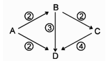

Problem Patterns
1. OR/AND & their combinations [L1]
- A stadium has 2 gates on side-1 and 3 gates on side-2. Find the number of ways of going in and out as per following conditions:
– A) Entry and exit from any door.
– B) Entry and Exit from different doors.
– C) Entry from side-1 and exit from side-2
– D) Entry and exit should be from different sides.
- Cities A, B, C and D are connected by a network of roads as shown below. In how many ways can a person go from city A to city D without visiting a city more than once?

2. Digit Permutations [L1]
- How many 4 digit odd numbers can be formed using the digits 1, 2, 3, 4, 5 (without repetition)?
- If the number of five digit numbers with distinct digits and 2 at the tens’ place is 336k, then k is equal to?
- The number of 6 digit numbers that can be formed using the digits 0, 1, 2, 5, 7 and 9 which are divisible by 11 and no digit is repeated is? [Solution]
3. Hall Illumination [L1]
- In how many ways can a student answer 10 MCQs if:
– A) Questions are single correct type.
– B) Questions are multiple correct type.
- There are 10 lamps in a hall. Each one of them can be switched on independently. The number of ways in which the hall can be illuminated is?
4. Dictionary Rank [L2]
- If all the words (with or without meaning) having five letters, formed using the letters of the word SMALL and arranged as in a dictionary, then the position of the word SMALL is?
5. Taxicab Paths [L2]
- If an insect wants to travel from point A to point B on a 3 x 5 net in shortest possible path, then in how many paths are possible. [Solution]
6. Team/Ball Selection [L3]
- In how many ways can a team of 4 boys and 4 girls be selected out of 6 boys and 5 girls if a particular boy and a particular girl refuse to work together?
- A debate club consists of 6 girls and 4 boys. A team of 4 members is to be selected from this club including the selection of a captain (from among these 4 members) for the team. If the team has to include at most one boy, then the number of ways of selecting the team is? [Solution]
- A box contains 2 white balls, 3 black balls and 4 red balls. In how many ways can three balls be drawn from the box if at least one black ball is to be included in the draw? (Balls of same colour are also distinct). [Solution]
7. Number Sequences [L3]
- How many 3 digit numbers can be formed such that its digits are in increasing AP? [Solution]
8. Line Segments [L4]
- Lines L1 and L2 are parallel to each other. 3 points are taken on L1 and 4 points are taken on L2. How many New Straight Lines can be drawn passing through these points?
9. Intersection Points [L4]
- The maximum number of intersection points of n circles and n straight lines, among themselves is 80. Then value of n is? [Solution]
- Take a convex octagon in which no two diagonals are parallel and no three are concurrent inside the polygon. Find the number of intersection points of the diagonals, lying inside the polygon. [Solution] 10. Number of Polygons
10. Polygon Counting [L4]
- The side AB, BC and CA of a triangle ABC have 3, 4 and 5 interior points respectively on them. How many triangles can be constructed using these interior points as vertices? [Solution]
- There are 11 points on a plane of which 5 are concyclic. Other than these, no other 4 points are concyclic. Then maximum number of circles that can be drawn so that each contains at least three of the given points is?
11. Chessboard Problems [L4]
- Count the number of rectangles in a chessboard. [Solution]
- Count the number of squares in a chessboard.
- Eight identical rooks are to be placed on an 8 x 8 chess board. The number of ways of doing this, so that no two rooks are in attacking positions, is?
- Find the number of ways of keeping 2 identical rooks on an 8 x 8 chess board so that they are not in adjacent squares. (Two squares are adjacent when they have a common side) [Solution]
12. Book Arrangements